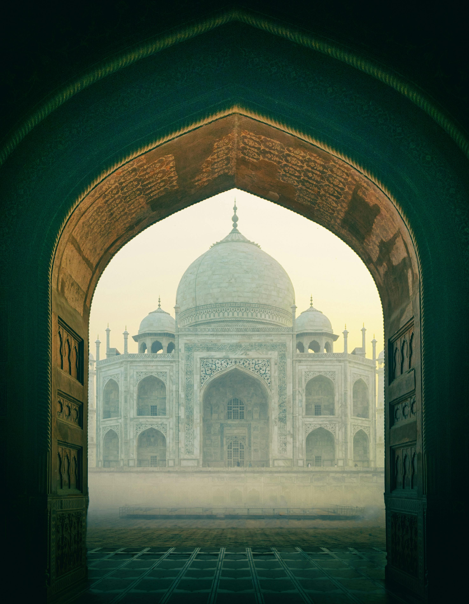

ताज महल

The Taj Mahal, an architectural masterpiece nestled in the heart of
Agra, India, stands as a timeless testament to love and beauty.
Commissioned by the Mughal emperor Shah Jahan in memory of his beloved
wife Mumtaz Mahal, this iconic monument has captured the imagination of
millions with its exquisite design and poignant backstory.
Constructed between 1631 and 1653, the Taj Mahal is a marvel of Mughal
architecture, blending elements of Persian, Islamic, and Indian styles
seamlessly. Its symmetrical layout, characterized by a grand central
dome flanked by four minarets, reflects a sense of balance and harmony
that is both mesmerizing and awe-inspiring. Crafted from white marble,
the mausoleum glows with a soft luminescence under the golden rays of
the sun, evoking a sense of ethereal beauty that seems almost
otherworldly.
As one approaches the Taj Mahal, they are greeted by its majestic
entrance gate, adorned with intricate carvings and calligraphy from the
Quran, serving as a prelude to the splendor that lies beyond. Passing
through the gate, visitors are greeted by a meticulously manicured
garden, divided into symmetrical quadrants by reflecting pools that
mirror the grandeur of the monument above. The pathway leading to the
mausoleum is flanked by lush greenery and fragrant blooms, creating a
sensory experience that is as enchanting as it is unforgettable.
Ascending the steps of the platform upon which the Taj Mahal rests, one
is struck by the sheer scale and magnificence of the structure before
them. The central dome, reaching a height of over 70 meters (230 feet),
dominates the skyline, its pure white marble adorned with intricate
inlay work of semi-precious stones such as lapis lazuli, jade, and
turquoise. The facade of the mausoleum is adorned with delicate
arabesques and floral motifs, each intricately carved by skilled
artisans who dedicated years of their lives to its creation.
Stepping inside the Taj Mahal, visitors are greeted by the serene
interior of the mausoleum, where the cenotaphs of Shah Jahan and Mumtaz
Mahal lie side by side, forever entwined in eternal love. The walls are
adorned with exquisite marble screens, delicately carved with geometric
patterns that filter the soft light streaming in from the arched
windows, casting a warm glow over the sacred space. The silence within
is palpable, broken only by the whispers of awe from those who have come
to pay their respects to the enduring bond between emperor and empress.
Beyond its architectural brilliance, the Taj Mahal holds a deeper
significance as a symbol of enduring love and devotion. It stands as a
monument to the power of love to transcend time and space, inspiring all
who gaze upon it to believe in the eternal nature of true love. As the
sun sets and the marble facade of the Taj Mahal is bathed in the soft
hues of twilight, it serves as a poignant reminder that love, like the
Taj Mahal itself, is a timeless masterpiece that will never fade.